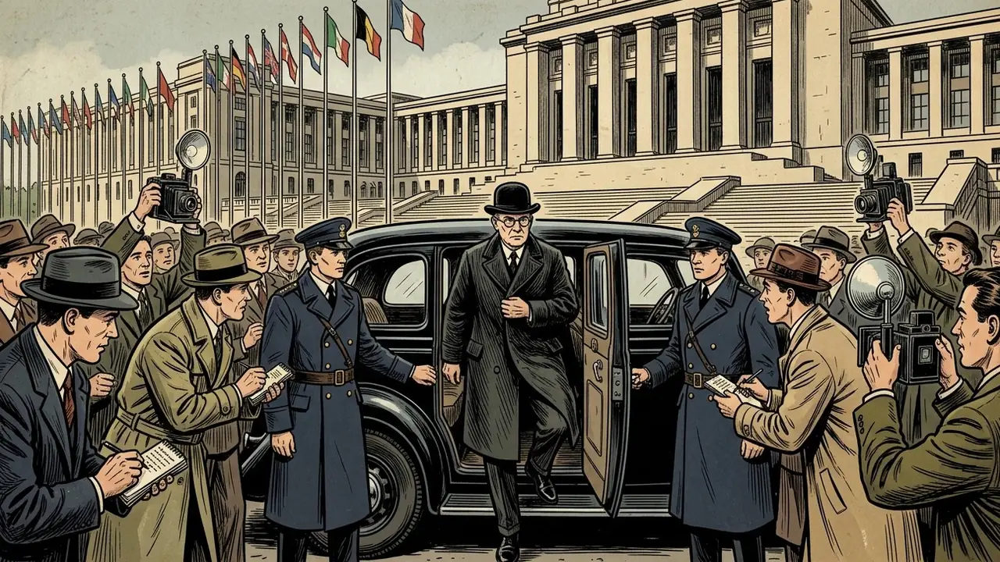

History Games
Choose a game. Both work on tablets, phones and computers.

IGCSE & A-Level · 1919–1939
Shadows over Geneva
Write the peace with the Big Three in Paris, sit on the League of Nations Council, or advise the leaders of Britain, France, Germany or Italy. Make the decisions history made. Four mistakes and you are out.
Play →
Neolithic Cyprus · 9,000 years ago
Children of Choirokoitia
Explore a 3D Neolithic village, help your family with the day’s chores, collect facts in your journal and take the village quiz.
Play →